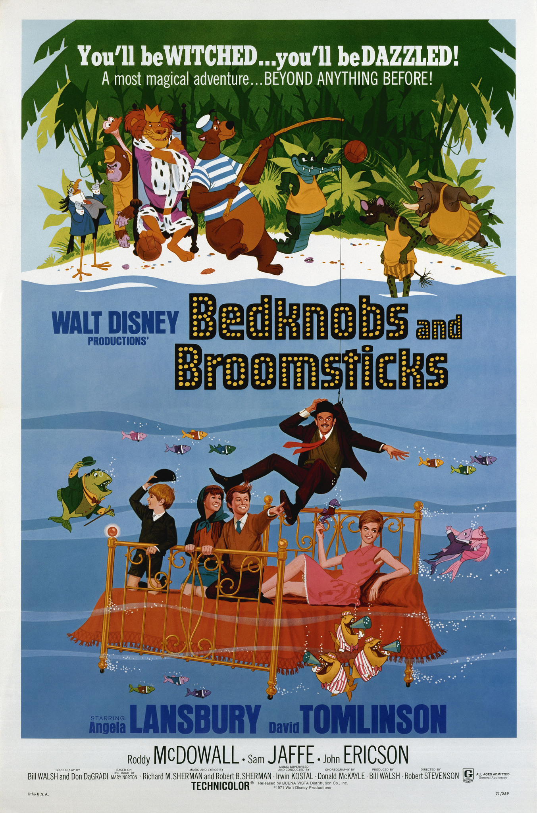

Bedknobs and Broomsticks
44th Academy Awards
(Oscars 1972)
5 Nominations, 1 Award
| Nominations | ||
|---|---|---|
| Category | Nominees | Result |
| Art Direction | Emile Kuri, Hal Gausman, John B. Mansbridge, and Peter Ellenshaw | Nominated |
| Costume Design | Bill Thomas | Nominated |
| Special Visual Effects | Alan Maley, Danny Lee, and Eustace Lycett | Won |
| Music (Scoring: Adaptation and Original Song Score) | Irwin Kostal, Richard M. Sherman, and Robert B. Sherman | Nominated |
| Music (Song--Original for the Picture) "The Age Of Not Believing" |
Richard M. Sherman and Robert B. Sherman | Nominated |